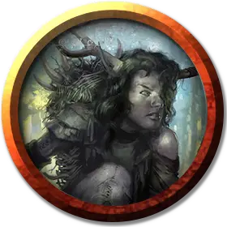

Ноори
Noori
Средний Гуманоид, хаотично-злой, именной НИП

Класс Доспеха 13 (шкурный доспех)
Хиты 67 (9к8 + 27)
Скорость 30 футов
| мод | спас | ||
|---|---|---|---|
| СИЛ | 16 | +3 | +3 |
| ЛОВ | 12 | +1 | +1 |
| ТЕЛ | 17 | +3 | +3 |
| мод | спас | ||
|---|---|---|---|
| ИНТ | 9 | −1 | −1 |
| МДР | 11 | +0 | +0 |
| ХАР | 9 | −1 | −1 |
Навыки Выживание +2, Скрытность +3
Чувства пассивное Восприятие 10
Языки Общий, Бохти
Опасность 2 (450 опыта)
Бонус мастерства +2
Особенности
Безрассудство. В начале своего хода Ноори может решить, что в этом ходу все рукопашные атаки оружием будет совершать с преимуществом, но в этом случае до начала его следующего хода все броски атаки по нему тоже будут совершаться с преимуществом.
Описание
Она безоружна, потеряла свою двуручную секиру. Если Ноори получит немагическое оружие, то она совершает атаки им с бонусом +5 и добавляет свой модификатор Силы (+3) к урону этого оружия при попадании.